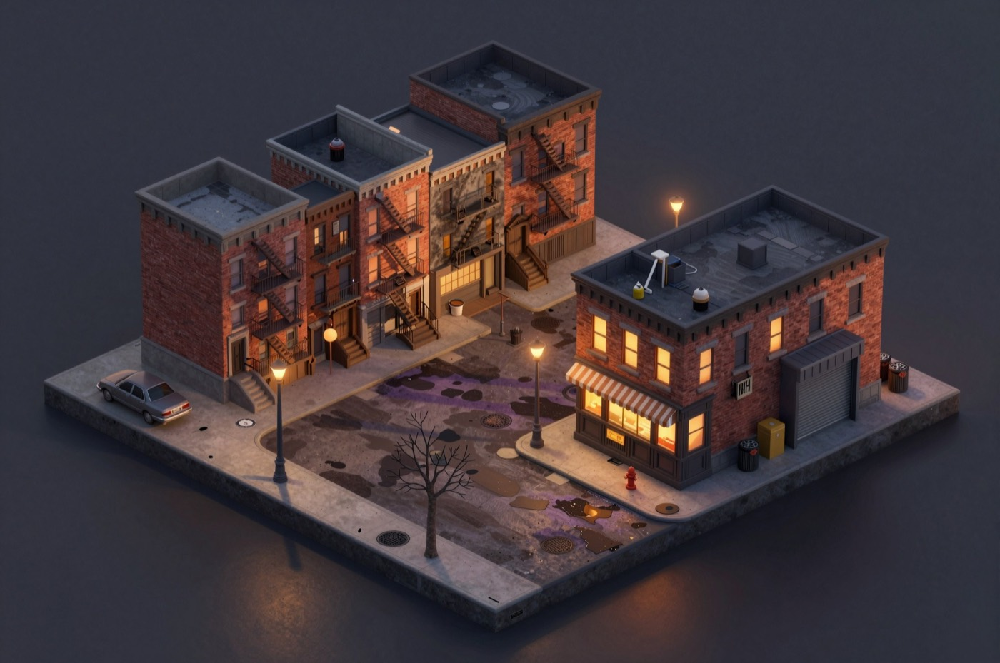

Tremont
Tremont is the world that ships with the engine and the one the beta plays. It is a modern city with a cast of about forty across four districts, written in code rather than as a card. This page shows how the primitives on the rest of the site are used in one world.

The premise
The player is worth a hundred million and nobody on his street knows it. He signed for a flat in a walk-up with a dead boiler a week ago, and he also has a penthouse across the river that nobody knows about either. It is a wet autumn. The world opens on a Tuesday evening at the bar on the corner.
The design goal is that money is not the scarce resource. Not being known is. Every situation can be solved with a cheque, and every cheque spends the one thing he cannot get back.
How the world is declared
Tremont is registered as a built-in world with these settings:
export const TREMONT: BuiltInWorld = {
id: "tremont",
name: "Tremont",
opening: "The Seven has the door propped open and the bar is three deep in regulars...",
seed: seedCity,
player: WESS,
tick: { ladder: [...], disclosure: [...] },
voice: TREMONT_VOICE,
residents: [...], // whose knowing counts as "the street knowing"
secret: THE_MONEY,
calendar: { firstDay: 8, firstWeekday: 1 },
beatMinutes: 3,
climate: { dayC: 11, nightC: 5, wet: 0.55 },
tells: [ /\bsold (my|a|the) (company|start-?up|business|app)\b/i, ... ],
};Each line maps to a page on this site. The calendar is on Time and routines. The ladder and disclosure rules are on Wants and situations and What people know. The voice is on Extending the engine.
The secret as data
The player's wealth is a fact from the first minute, held by one person in confidence: his driver. Exposure is not a number anybody maintains. It is a count of who holds the fact, measured against the residents list. Three disclosure rules give it away without anybody saying a word:
- Anybody who has ever stood in the penthouse. The tower's lobby is deliberately excluded, so a courier at the front desk learns nothing.
- Anybody in the room for a single payment over five thousand.
- Anybody on Holloway who sees him next to the man who drives him. This one produces a guess rather than a certainty, and a guess travels and can be wrong.
The tells list is a set of phrases the player might type that give it away in
part.
Four situations, each with an ending condition
| Situation | What would count as it being over |
|---|---|
| The boiler. The quote is more than the building earns in a season, and the landlady has a developer's offer. | She has the money, or a boiler is in the basement. |
| The bar's quarter. The owners are one bad quarter from losing it. | There is enough behind the bar to see the quarter out, in either owner's pocket. |
| The rota. A nurse has worked nights for two years. | Her own day stops putting her at the hospital at nine in the evening, by any route. |
| The studio. A trainer shoots content in her bedroom. | She works somewhere that is neither her bedroom nor the gym she already coaches at. |
Nothing enumerates the solutions. The condition is the only thing the engine checks. One authoring lesson is worth recording: the first version of the studio condition said only "not her bedroom", and it was satisfied before the world finished loading, because a trainer works at a gym. A condition that is true at the start is a situation that never existed.
The cast is a wiring diagram
Every person is keeping one thing, and the things are wired to each other through facts, beliefs and situations rather than through prose. One chain: the landlady's developer's offer was carried by a realtor whose commission would pay for her husband's church roof, which is fifteen thousand short, while the developer's backer needs the block assembled by year end. So the fastest way to keep the building standing is to fill a church roof fund forty minutes away, and nobody on Holloway would learn why the pressure eased. That is not a scripted branch. It is four people's conditions with the same answer.
The four districts
Holloway is the player's street, with problems in four figures. Kessler is across the bridge, eighteen minutes: glass, a courthouse, a members' club, and the tower. Wyneshire is the university quarter. Maplewood is a cul-de-sac forty minutes out by car. Ten more people live elsewhere and can only be reached by phone; they carry on whether or not he opens it.
Two pieces of map design use topology instead of special cases. The fastest route between Holloway and Kessler never passes through the tower lobby, so nobody is walked past the secret by their timetable; a test checks both that exactly one person holds the secret after four days and that no route crosses the lobby. And since news moves only between people who share a room, the world supplies the bodies that cross districts on purpose: two professionals who drink on Holloway because nobody knows their name, a commuting couple who compare notes every evening, and a courier who is in more rooms in a day than anybody.

The phone
Tremont's phone apps are content, built on the engine's app model. Each one writes ordinary records rather than running a mini-game.
- Texts
- Recorded word for word. How long somebody takes to answer is a function of their evening: working a shift triples it, company adds to it, and asleep is a silence rather than a delay, with the answer arriving when the world wakes them. A message to somebody in the room with you is not a text at all; it becomes your next turn.
- Hush
- An anonymous meeting app. Distance shown is real walking time. Who is online is computed from the world once per person per day: on the app at all, an hour that suits their day, and the nerve for it. Asking to meet is a real decision, and a yes is a plan the world keeps.
- Collar
- The tasks app, covered on Plans, tasks and trips.
- The cam platform
- Watching is an event with a witness list of one, the performer. Tipping moves real coin, and whether she learns who tipped is your choice. Booking a private session is an ordinary arrangement with a price held in escrow. Asking to appear with her opens a situation, because what she makes of it is a scene.
- The neighbourhood feed
- The rumour mill made readable, with names half filed off. See Rumour.
Behind every handle there is exactly one person. Tells are written down at the moment a handle is created, one per day in a listing photograph, so the narrator has something to plant from the first message and something to pay off at the reveal.